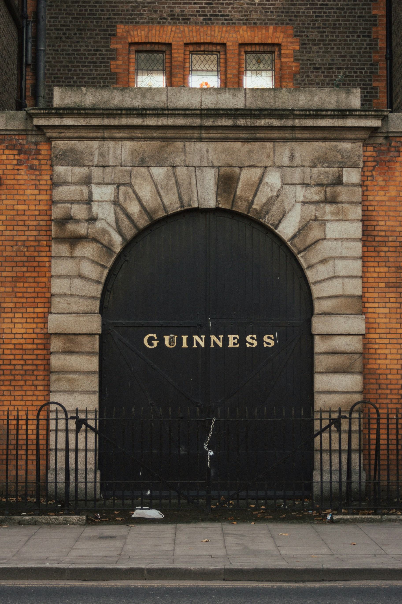
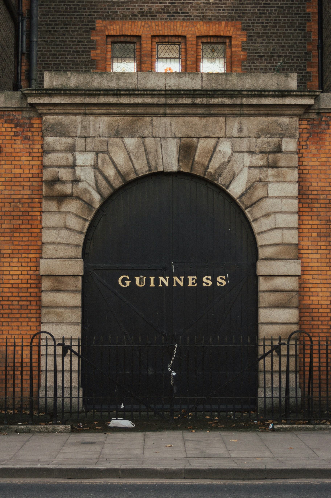
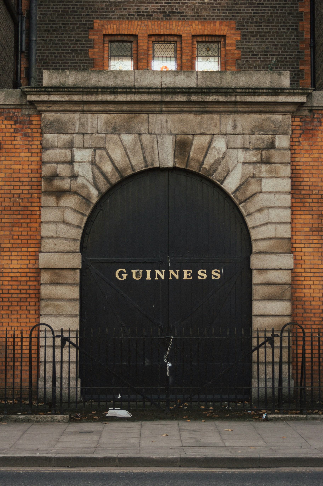

Discover Dublin
 


Dublin, the rising star of Ireland, offers everything from historic pubs with live traditional music to vibrant nightlife spots. Here, we explore Ireland’s capital and uncover its lively bar scene.´

Dublin, the rising star of Ireland, offers everything from historic pubs with live traditional music to vibrant nightlife spots. Here, we explore Ireland’s capital and uncover its lively bar scene.´
Dublin is a city rich in history, with attractions ranging from medieval castles to grand cathedrals and historic prisons. Whether you're exploring the cobbled streets of Temple Bar or diving into Ireland's past through its many museums, there is no shortage of things to see. Visitors can admire impressive architectural landmarks, learn about the city’s Viking roots, and walk through sites that have played a crucial role in Ireland’s fight for independence.
Kilmainham Gaol is one of Dublin’s most significant historical sites. Built in 1796, this former prison held many Irish revolutionaries, including leaders of the 1916 Easter Rising. A guided tour offers deep insights into Ireland’s struggle for independence and the harsh realities of life for prisoners. Walking through its eerie stone corridors is an unforgettable experience.
Good for:
Dublin Castle stands at the heart of the city and has been a center of power in Ireland for over 800 years. Originally built as a medieval fortress, it later became the seat of British rule in Ireland until 1922. Visitors can explore the grand State Apartments, the medieval Undercroft, and the historic Chapel Royal, each telling a different story of Dublin’s past.
Good for:Trinity College Dublin is home to one of the world’s most famous manuscripts, the Book of Kells. This beautifully illuminated gospel book dates back to the 9th century and is housed in the stunning Long Room Library, which itself is a sight to behold. Walking through this historic institution feels like stepping back in time.
Good for: